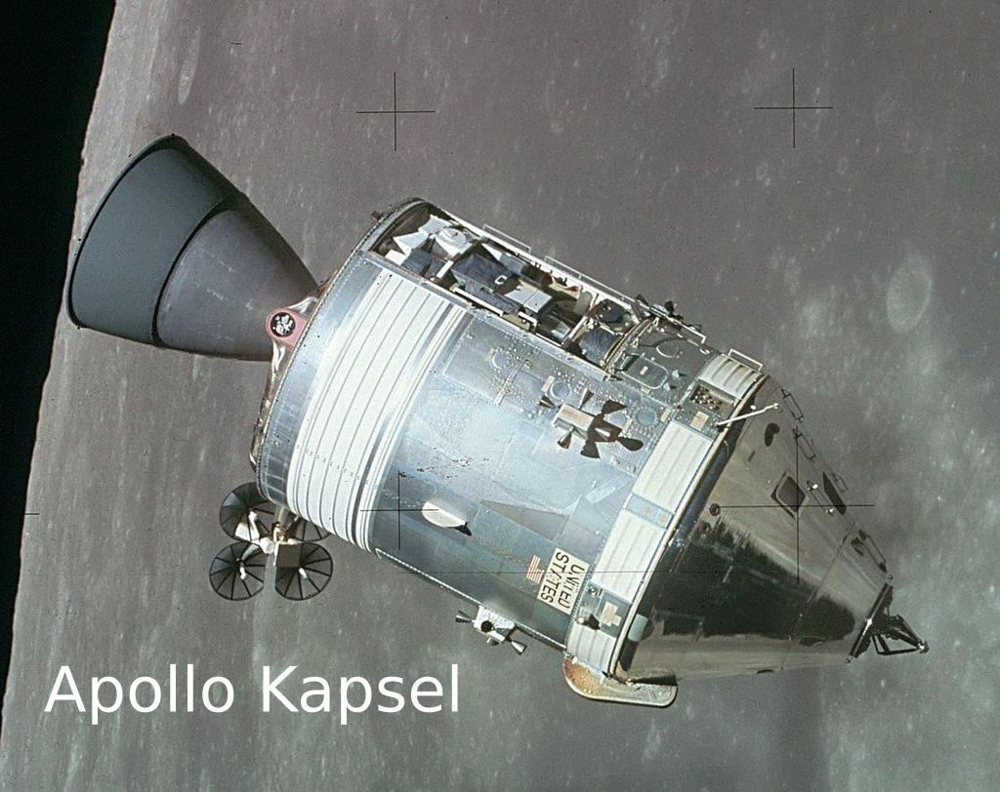
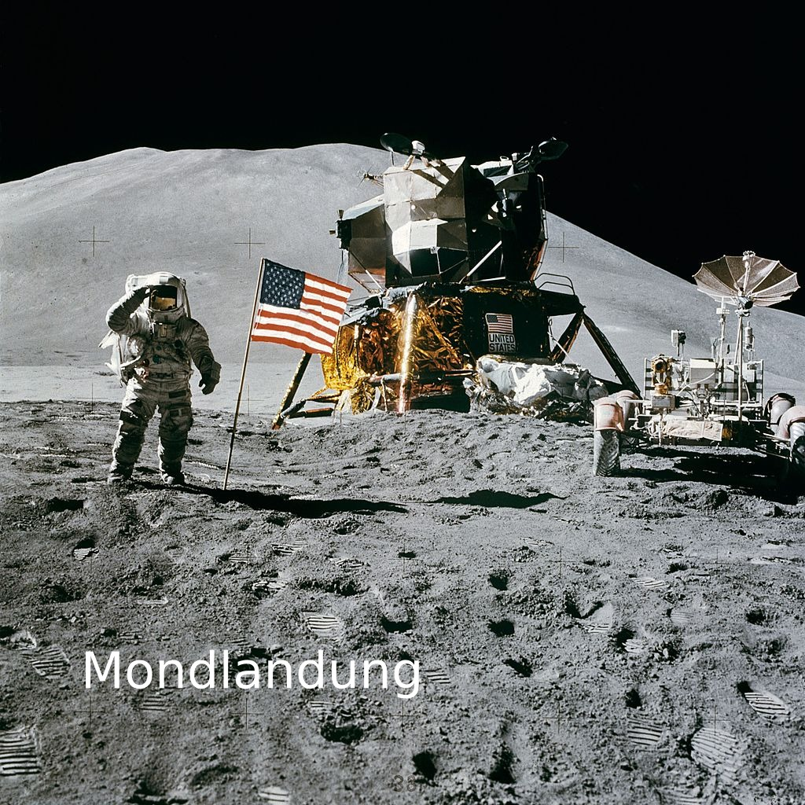
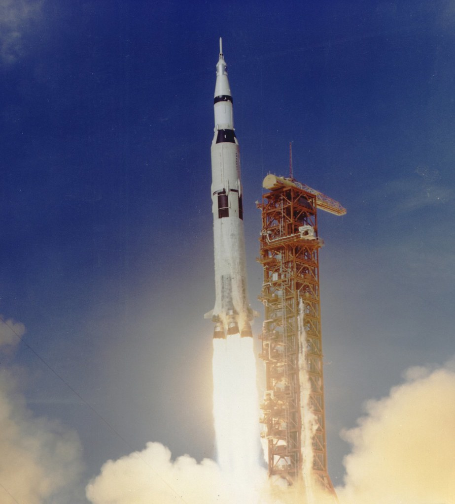
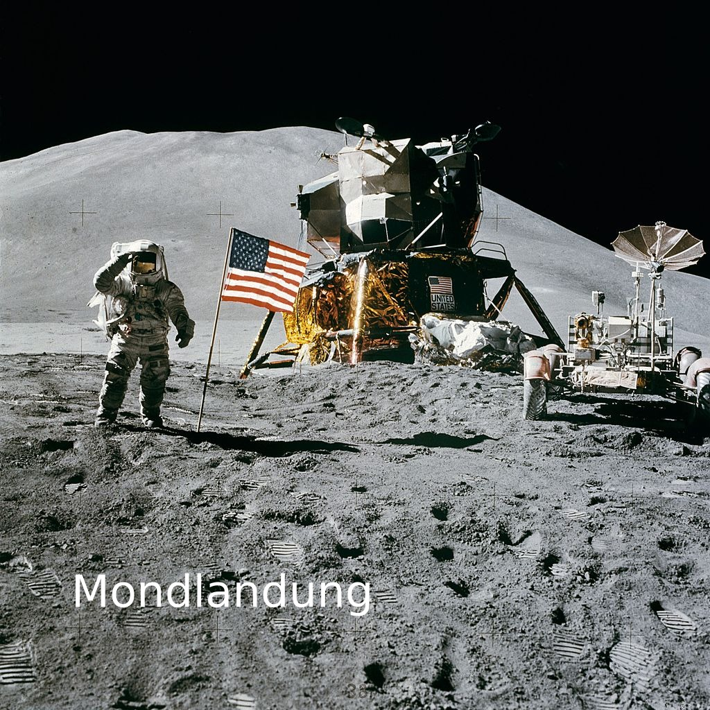
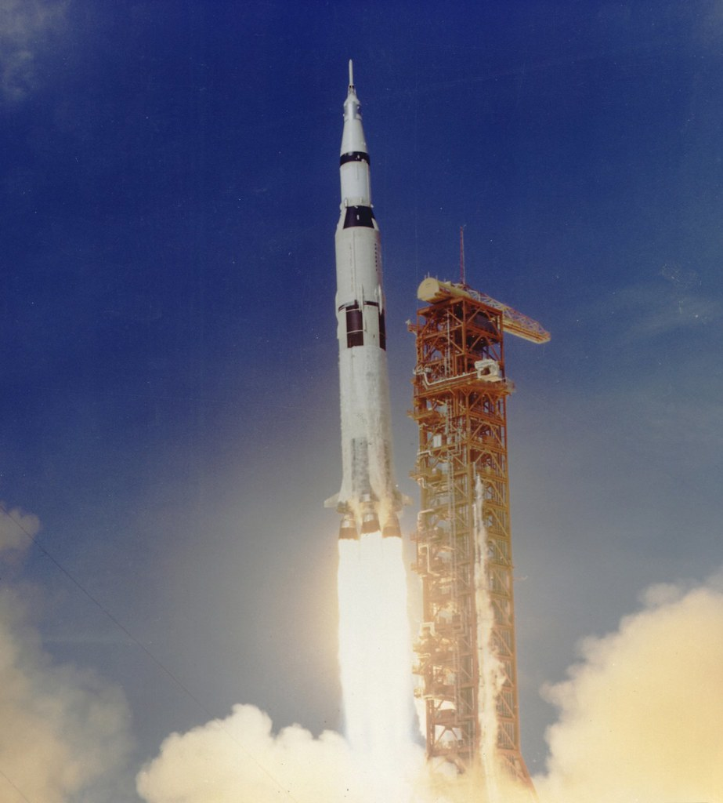
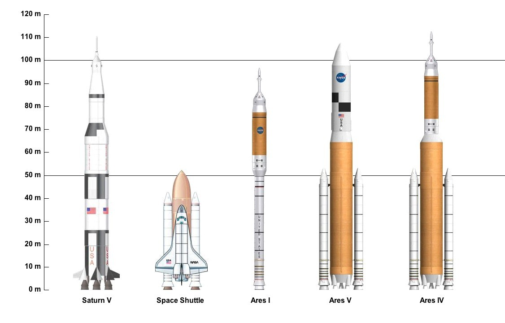
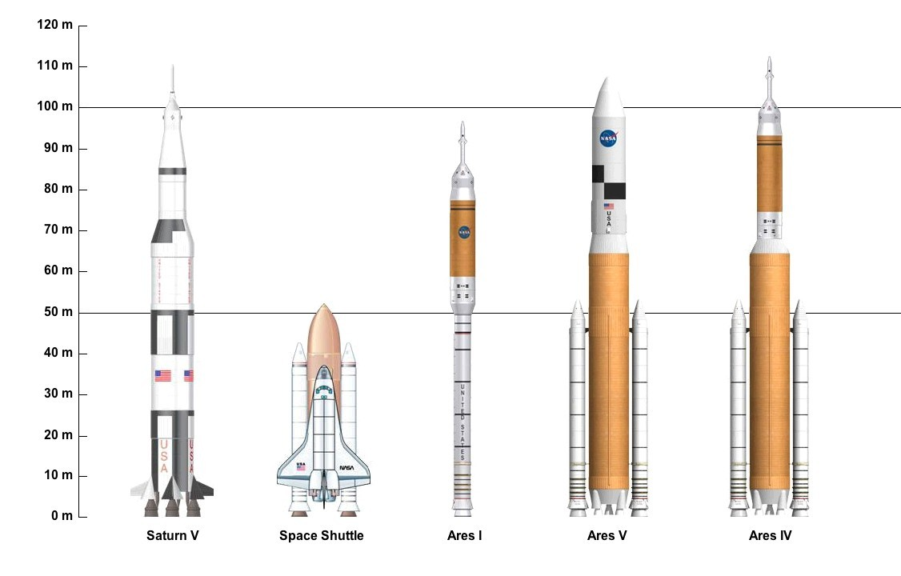
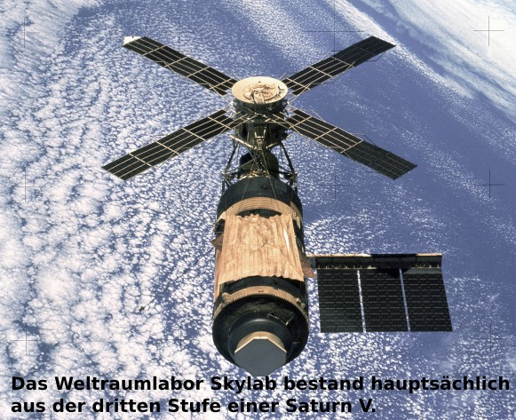
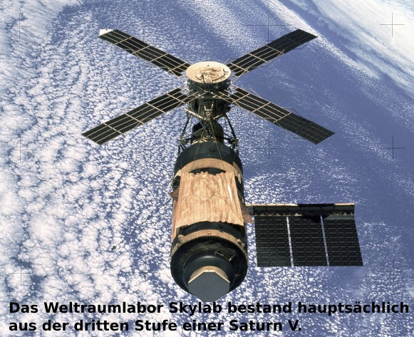

Saturn V.
Die Saturn V ist die Rakete die Apollo 11 zum Mond bringt die Komandokapsel heißt Columbia

Die Sowietunion wollte auch zum Mond fliegen, sie haben es aber nicht geschafft.

 Die Saturn V ist eine 3-stufige Rakete.
Die Saturn V ist eine 3-stufige Rakete.
 Bei den 3 letzten Apollomissionen hatten ein Mondauto, um große strecken zurückzulegen.

Die Saturn V ist die größte Rakete der Welt (111 m)

Die russische Mondrakete ist N1
Bei den 3 letzten Apollomissionen hatten ein Mondauto, um große strecken zurückzulegen.

Die Saturn V ist die größte Rakete der Welt (111 m)

Die russische Mondrakete ist N1
 Die Saturn V ist nicht die einzige große Rakete.

Die Saturn V ist nicht so oft gestartet.
Die Saturn V ist nicht die einzige große Rakete.

Die Saturn V ist nicht so oft gestartet.

 
Apollo 8 war die erste bemannte Mission.

Apollo 8 war die erste bemannte Mission.